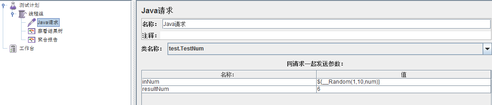
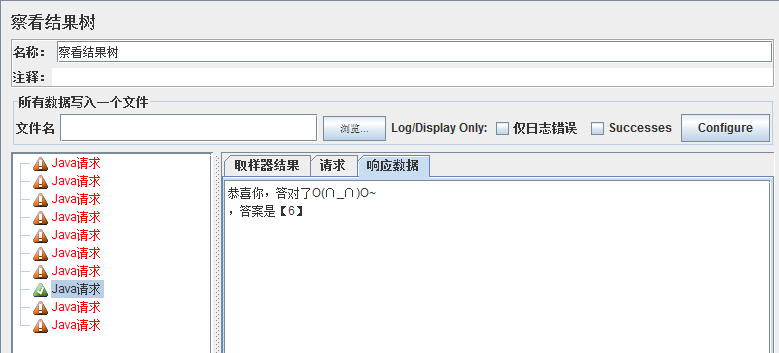
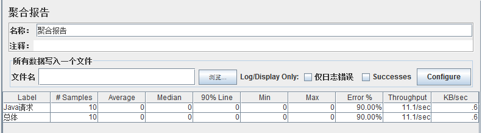

Jmeter使用自定义编写代码
我们在做性能测试时,有时需要自己编写测试脚本,很多测试工具都支持自定义编写测试脚本,比如LoadRunner就有很多自定义脚本的协议,比如"C Vuser","Java Vuser"等协议。
同样,Jmeter也支持自定义编写的测试代码,不过与LoadRunner不同的是,Jmeter没有自带编译器,需要借助第三方编译器才能实现。
下面举一个简单的Java自定义测试代码例子,使用Java编译器编写测试代码(Java编译器可以用Eclipse,JBulider等),实现功能为:
判断输入的数字是否等于你指定的数，如果等于，则返回成功，如果小于，则提示该输入数字太小，如果大于，则提示该数字太大，如果不为数字，提示输入数字。
然后在放到Jmeter中模拟10个用户测试,同时运行这段代码,具体实现如下:
一、开始编写前的准备
- 打开Java编译器，新建一个项目TestNumber，然后新建一个包test。
- 从Jmeter的安装目录lib/ext中拷贝两个文件ApacheJMeter_core.jar和ApacheJMeter_java.jar到TestNumber项目中，然后引入这两个JAR包。
- 在test包中新建一个类，类名为TestNum，该类继承AbstractJavaSamplerClient类，AbstractJavaSamplerClient存在于ApacheJMeter_java.jar这个JAR包中，引用即可调用。
- TestNum类在继承AbstractJavaSamplerClient类的时候，需要实现四个方法，分别是
setupTest()：初始化方法，用于初始化性能测试时的每个线程； getDefaultParameters()：主要用于设置传入的参数； runTest()：为性能测试时的线程运行体； teardownTest()：测试结束方法，用于结束性能测试中的每个线程。
二、具体的代码实现
package test;
import org.apache.jmeter.config.Arguments;
import org.apache.jmeter.protocol.java.sampler.AbstractJavaSamplerClient;
import org.apache.jmeter.protocol.java.sampler.JavaSamplerContext;
import org.apache.jmeter.samplers.SampleResult;
public class TestNum extends AbstractJavaSamplerClient{
private SampleResult results;
/**
* 输入的数字
*/
private String inNum;
/**
* 需要匹配的数字
*/
private String resultNum;
/**
* 初始化方法，初始化性能测试时的每个线程
* 实际运行时每个线程仅执行一次，在测试方法运行前执行，类似于LoadRunner中的init方法
*/
public void setupTest(JavaSamplerContext jsc) {
results = new SampleResult();
inNum = jsc.getParameter("inNum", "");
resultNum = jsc.getParameter("resultNum", "");
if (inNum != null && inNum.length() > 0){
results.setSamplerData(inNum);
}
if (resultNum != null && resultNum.length() > 0){
results.setSamplerData(resultNum);
}
}
/**
* 设置传入参数
* 可以设置多个，已设置的参数会显示到Jmeter参数列表中
*/
public Arguments getDefaultParameters() {
Arguments params = new Arguments();
params.addArgument("inNum","");
params.addArgument("resultNum", "66");
return params;
}
/**
* 性能测试时的线程运行体
* 测试执行的循环体，根据线程数和循环次数的不同可执行多次，类似于Loadrunner中的Action方法
*/
public SampleResult runTest(JavaSamplerContext arg0) {
boolean flag = false;
//定义一个事务，表示这是事务的起始点，类似于Loadrunner中的lr.start_transaction
results.sampleStart();
for (int i = inNum.length();--i >= 0;){
if (!Character.isDigit(inNum.charAt(i))){
flag = false;
}else{
flag = true;
}
}
for (int j = resultNum.length();--j >= 0;){
if (!Character.isDigit(resultNum.charAt(j))){
flag = false;
}else{
flag = true;
}
}
//定义一个事务，表示这是事务的结束点，类似于Loadrunner中的lr.end_transaction
results.sampleEnd();
if (flag){
Integer num = Integer.parseInt(inNum);
Integer rsNum = Integer.parseInt(resultNum);
if (num == rsNum){
results.setDataEncoding("UTF-8");//因为响应的数据有中文，所以最好先设置编码
results.setResponseData("恭喜你，答对了O(∩_∩)O~\n答案是【"+resultNum+"】");//响应数据，对应结果树，其他response code等可以自己点出来
results.setSuccessful(true);//告诉系统返回正确还是错误
} else if (num > rsNum){
results.setDataEncoding("UTF-8");
results.setResponseData("好像大了点~~~~(>_<)~~~~ \n您输入的是【"+inNum+"】");
results.setSuccessful(false);
}else {
results.setDataEncoding("UTF-8");
results.setResponseData("好像小了点~~~~(>_<)~~~~ \n您输入的是【"+inNum+"】");
results.setSuccessful(false);
}
}else{
results.setDataEncoding("UTF-8");
results.setResponseData("请输入数字：~~~~(>_<)~~~~ \n您输入的inNum是【"+inNum+"】，resultNum是【"+resultNum+"】");
results.setSuccessful(false);
}
return results;
}
/**
* 测试结束方法，结束测试中的每个线程
* 实际运行时，每个线程仅执行一次，在测试方法运行结束后执行，类似于Loadrunner中的End方法
*/
public void teardownTest(JavaSamplerContext arg0) {
}
}
三、Jmeter运行分析
- 将上述代码打包成jar包，生成的包名称为TestNumber.jar，将jar包拷贝到Jmeter的安装目录lib/ext下面。
- 运行Jmeter，添加线程组及java请求，显示如下：

其中，inNum为我们输入的值，因为需要用到多个用户，避免填写的麻烦，我们用随机数函数来随机抽取数字验证，resultNum为匹配的结果。
- 添加监听器，这里我们添加查看结果树和聚合报告就好。
- 结果显示如下图：
查看结果树：

我们可以看到，10个请求中，有一个请求回答正确，响应数据对应了我们的代码，表示执行成功。
聚合报告：

可以看到如上信息，请求用户为10个，因为我们的代码基本上没有任何含义，执行速度很快，所以其他值基本为0。
通过上面的例子我们可以发现,使用Jmeter自定义Java测试代码,配合Jmeter自带的函数,就可以实现出LoadRunner中"Java Vuser"协议的绝大多数功能,而且是没有用户数限制和完全免费的。
上面的例子非常简单,而且没有任何实际意义,只是一个简单的Jmeter测试代码示例,用于抛砖引玉,希望大家一起交流,共同 进步。